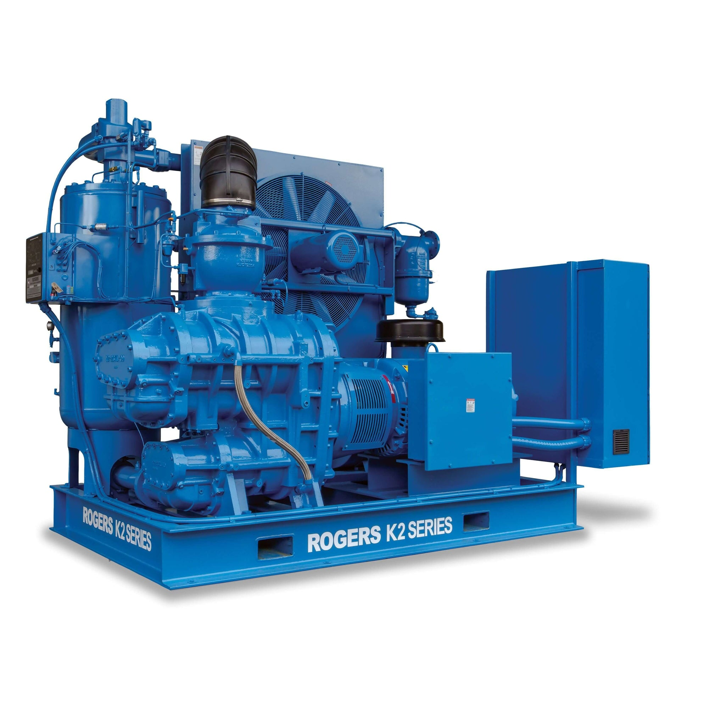

Ćwiczenie 2: Bilans Sprężarkowni (kompresorowni)
🏭 Projekt: Etap 2 - Sprężarkownia
Do napełniania naszego zbiornika (\(V=5m^3\)) wybrano sprężarkę tłokową. Musimy zweryfikować jej parametry energetyczne i dobrać system chłodzenia.
Założenia Projektowe:
- Powietrze ssane: \(p_1 = 1 \text{ bar}, t_1 = 20^\circ C\).
- Powietrze tłoczone: \(p_2 = 9.5 \text{ bar}\).
- Wydajność: \(\dot{V}_n = 100 \text{ m}^3/h\) (normalnych).
- Proces sprężania: Politropa z wykładnikiem \(n = 1.35\).

⚙️ Zadanie 2.1: Praca Techniczna Sprężania
Oblicz jednostkową pracę techniczną \(l_t\) potrzebną do sprężenia 1 kg powietrza.
Wzór na pracę techniczną przemiany politropowej
\[ l_t = \frac{n}{n-1} R T_1 \left[ 1-\left(\frac{p_2}{p_1}\right)^{\frac{n-1}{n}} \right] \]
Obliczenia:
- \(R = 287 \text{ J}/(\text{kg K})\)
- \(T_1 = 293.15 \text{ K}\)
- \(p_2/p_1 = 9.5\)
- \(n = 1.35\)
\[ l_t = \frac{1.35}{0.35} \cdot 287 \cdot 293.15 \cdot \left[ 1-(9.5)^{\frac{0.35}{1.35}} \right] \] \[ l_t = 3.857 \cdot 84134 \cdot [ 1-1.795 ] \] \[ l_t \approx 324\,400 \cdot (-0.795) \approx \mathbf{-258\,000 \text{ J/kg} = -258 \text{ kJ/kg}} \]
UWAGA!
Ujemna praca techniczna oznacza, że sprężarka pobiera pracę z zewnątrz! Czyli napędzana jest silnikiem!
⚡ Zadanie 2.2: Moc Silnika Napędowego
Jaka jest teoretyczna moc sprężarki (\(N_t\))?
Strumień masy: \(\dot{m} = ?\)
- Wzór: \(\dot{m} = \frac{p_n \cdot \dot{V}_n}{R \cdot T_n}\) (warunki normalne: \(p_n = 101325\) Pa, \(T_n = 273.15\) K).
- \(\dot{m} = \frac{101325 \cdot (100/3600)}{287 \cdot 273.15} = \frac{2814.5}{78394} \approx 0.0358 \text{ kg/s}\).
- Moc teoretyczna: \[ N_t = \dot{m} \cdot l_t \] \[ N_t = 0.0358 \text{ kg/s} \cdot 258 \text{ kJ/kg} \approx \mathbf{9.24 \text{ kW}} \]
Tip
Rzeczywista moc będzie wyższa przez sprawność mechaniczną (\(\eta_m \approx 0.9\)). \(N_{silnika} = N_t / 0.9 \approx 10.3 \text{ kW}\).
🔥 Zadanie 2.3: Temperatura Tłoczenia
Do jakiej temperatury nagrzeje się powietrze na wylocie? To kluczowe dla doboru oleju i chłodnicy!
\[ T_2 = T_1 \cdot \left(\frac{p_2}{p_1}\right)^{\frac{n-1}{n}} \]
\[ T_2 = 293.15 \cdot (9.5)^{0.259} \] \[ T_2 = 293.15 \cdot 1.795 \approx \mathbf{526 \text{ K} = 253^\circ C} \]
Uwaga! \(253^\circ C\) to bardzo wysoka temperatura! Grozi zapłonem par oleju. Konieczne jest chłodzenie międzystopniowe lub intensywne chłodzenie cylindra.
❄️ Zadanie 2.4: Bilans Ciepła (I Zasada)
Ile ciepła musimy odprowadzić w chłodnicy, aby schłodzić powietrze z powrotem do \(30^\circ C\) przed podaniem na halę?
I Zasada dla układu otwartego (chłodnica - ciśnienie stałe \(p=const\)): \[ \dot{Q} = \dot{m} \cdot (h_{wylot} - h_{wlot}) = \dot{m} \cdot c_p \cdot (t_{wyl} - t_{wl}) \]
Dane:
- \(\dot{m} = 0.0358 \text{ kg/s}\)
- \(t_{wl} = 253^\circ C\) (z sprężarki)
- \(t_{wyl} = 30^\circ C\) (wymagane)
- \(c_p \approx 1005 \text{ J}/(\text{kg K})\)
Obliczenia: \[ \dot{Q} = 0.0358 \cdot 1005 \cdot (30 - 253) \] \[ \dot{Q} \approx -8020 \text{ W} = \mathbf{-8.0 \text{ kW}} \]
(Minus oznacza ciepło odprowadzone Z układu).
🔄 Zadanie 2.5: Sprężanie Dwustopniowe
\(253^\circ C\) to za dużo! Rozważmy sprężanie dwustopniowe z chłodzeniem międzystopniowym do \(30^\circ C\).
Optymalna proporcja stopni (minimalna praca): \(p_{pośr} = \sqrt{p_1 \cdot p_2}\).
\[ p_{pośr} = \sqrt{1 \cdot 9.5} \approx 3.08 \text{ bar} \]
Temperatura po I stopniu (\(1 \rightarrow 3.08\) bar, \(n=1.35\)): \[ T_{I} = 293.15 \cdot (3.08)^{0.259} \approx 293.15 \cdot 1.333 \approx \mathbf{391 K = 118^\circ C} \]
Temperatura po II stopniu (\(3.08 \rightarrow 9.5\) bar, start od \(30^\circ C = 303K\)): \[ T_{II} = 303 \cdot (9.5/3.08)^{0.259} = 303 \cdot (3.08)^{0.259} \approx 303 \cdot 1.333 \approx \mathbf{404 K = 131^\circ C} \]
\(131^\circ C\) zamiast \(253^\circ C\)! Temperatura spadła prawie dwukrotnie. Jest to bezpieczne dla oleju i uszczelek.
📊 Zadanie 2.6: Porównanie Procesów Sprężania
Oblicz pracę techniczną dla trzech różnych procesów sprężania (\(p_1=1, p_2=9.5\) bar):
Izotermiczny (\(n=1\)): \[ l_t = R T_1 \ln\frac{p_2}{p_1} \] \[ l_t = 287 \cdot 293 \cdot \ln(9.5) \] \[ l_t \approx \mathbf{189 \text{ kJ/kg}} \] (Minimum teoretyczne)
Politropowy (\(n=1.35\)): \[ l_t \approx \mathbf{258 \text{ kJ/kg}} \] (Obliczone wcześniej)
Adiabatyczny (\(n=\kappa=1.4\)): \[ l_t = \frac{1.4}{0.4} \cdot 287 \cdot 293 \cdot \] \[ \cdot [(9.5)^{0.286}-1] \] \[ l_t \approx \mathbf{273 \text{ kJ/kg}} \] (Maksimum praktyczne)
Tip
Wniosek: Sprężanie izotermiczne wymaga o 31% mniej pracy niż adiabatyczne. Dlatego chłodzimy sprężarki!
🧠 Dlaczego n=1 “psuje” wzór?
Problem: Jeśli wstawisz \(n=1\) do wzoru politropowego, otrzymasz dzielenie przez zero (\(\frac{n}{n-1}\)). Dlaczego? Bo zmienia się charakter funkcji matematycznej pod wykresem (całki):
\[ l_t = \int v dp \]
Dla \(n \neq 1\) (Politropa): Funkcja potęgowa \(v = C \cdot p^{-1/n}\). Całka z \(x^a\) to \(\frac{x^{a+1}}{a+1}\). Stąd bierze się ułamek \(\frac{n}{n-1}\).
Dla \(n = 1\) (Izoterma): Funkcja hiperboliczna \(v = C/p\). Całka z \(1/x\) to logarytm naturalny (\(\ln x\))! \[ l_t = R T_1 \ln\frac{p_2}{p_1} \]
Reguła de l’Hospitala
Fizyka się nie “psuje”. Granica wzoru ogólnego przy \(n \to 1\) dąży właśnie do wzoru z logarytmem.
💧 Zadanie 2.7: Dobór Chłodnicy Wodnej
Musimy odprowadzić \(\dot{Q} = 8\) kW z chłodnicy sprężarki. Dysponujemy wodą z sieci wodociągowej (\(t_{w,in} = 15^\circ C\)). Maksymalna dopuszczalna temperatura wody na wylocie to \(40^\circ C\) (limit zrzutu do kanalizacji).
Oblicz wymagany strumień wody chłodzącej.
\[ \dot{Q} = \dot{m}_w \cdot c_w \cdot (t_{w,out} - t_{w,in}) \]
\[ \dot{m}_w = \frac{8000}{4190 \cdot (40 - 15)} = \frac{8000}{104\,750} \] \[ \dot{m}_w \approx \mathbf{0.076 \text{ kg/s} = 4.6 \text{ l/min}} \]
Note
Koszt wody: Przy cenie \(8 \text{ zł/m}^3\) i pracy sprężarki 2000 h/rok: \(0.076 \cdot 3.6 \cdot 2000 \cdot 8 \approx \mathbf{4380 \text{ zł/rok}}\). Warto rozważyć obieg zamknięty z wieżą chłodniczą!
🔬 Zadanie 2.8: Wyznaczanie Wykładnika Politropy
Serwisant zmierzył temperatury na sprężarce:
- Ssanie: \(t_1 = 22^\circ C\), \(p_1 = 1\) bar.
- Tłoczenie: \(t_2 = 215^\circ C\), \(p_2 = 8\) bar.
Jaki jest rzeczywisty wykładnik politropy \(n\) tej sprężarki?
\[ T_2/T_1 = (p_2/p_1)^{(n-1)/n} \]
Krok 1: Logarytmowanie
\[ \frac{488.15}{295.15} = 8^{(n-1)/n} \] \[ 1.654 = 8^{(n-1)/n} \] \[ \ln(1.654) = \frac{n-1}{n} \cdot \ln(8) \]
Krok 2: Wyznaczenie n
\[ 0.503 = \frac{n-1}{n} \cdot 2.079 \] \[ \frac{n-1}{n} = 0.242 \] \[ n = \frac{1}{1 - 0.242} \approx \mathbf{1.32} \]
Tip
\(n = 1.32 < \kappa = 1.4\) — sprężarka jest dobrze chłodzona (bliżej procesu izotermicznego niż adiabatycznego).
🏠 Zadanie Domowe (Raport 2)
Temat: Odzysk ciepła.
Skoro wyrzucamy 8 kW ciepła do otoczenia, inżynier produkcji proponuje wykorzystać je do podgrzewania wody użytkowej w umywalniach.
- Mamy strumień wody \(\dot{m}_w\) o temp. wejściowej \(10^\circ C\).
- Chcemy ją podgrzać do \(45^\circ C\).
- Zakładamy, że odzyskamy 80% ciepła z chłodnicy sprężarki (\(0.8 \cdot 8 \text{ kW}\)).
Zadanie: Oblicz, jaki strumień wody [l/min] możemy podgrzać?
- Ciepło właściwe wody: \(c_w = 4190 \text{ J}/(\text{kg K})\).

Termodynamika Techniczna - Ćwiczenia Projektowe